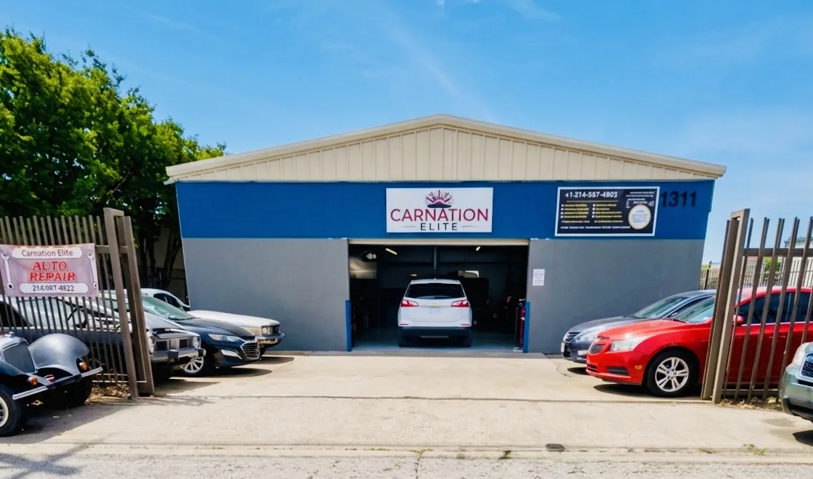

You're stuck in bumper-to-bumper traffic on LBJ or Central Expressway, the AC is running, and the temperature needle starts creeping toward the red. Maybe you see steam, or smell something sweet. It's one of the most stressful things that can happen behind the wheel, and what you do in the next few minutes decides whether this is a $200 repair or a new engine.
If your car overheats in traffic, turn off the AC, turn the heater on full hot, and pull over as soon as it's safe. Shut the engine off and let it cool for at least 30 minutes. Never open the radiator cap while the engine is hot.
- Turn the AC off and the heater on full hot with the fan on high
- Get out of traffic and pull over somewhere safe
- Turn the engine off and switch on your hazard lights
- Wait at least 30 minutes; don't open the hood or radiator cap while it's hot
- Check the coolant once it's cool, then call for a tow if it's empty, leaking or overheats again
Written with Rico and Sam, CarNation Elite’s technicians, who diagnose and repair cars for drivers in Dallas, Richardson, Plano and Addison. The steps below are the same ones we walk customers through on the phone when they call us from the shoulder of the highway.
What to Do Immediately When Your Car Overheats in Traffic
The goal is simple: take the load off the engine, get it to stop making heat, and keep yourself safe. Here's the order we recommend.
- Turn off the AC and turn the heater to full hot. The AC compressor adds load to the engine and its condenser dumps heat right in front of the radiator. The heater core is a small second radiator, so running the heat on high with the fan maxed pulls heat out of the engine and into the cabin. Roll the windows down. It's miserable in August, but it can buy you a few minutes to get off the road.
- Get out of traffic as soon as it's safe. Signal, move right and take the next exit, a parking lot or a wide shoulder. If you're creeping along and can't exit, putting the car in neutral and giving a light rev (around 1,500–2,000 RPM) can spin the water pump faster for a moment, but don't keep doing it if the gauge keeps rising.
- Shut the engine off and turn on your hazards. Once you're stopped, turn the engine off. A running engine keeps making heat, and if coolant is low or the water pump has failed, idling makes things worse. Pop the hood release from inside only if there's no steam; that lets heat escape.
- Let it cool for at least 30 minutes. Don't touch the radiator cap or coolant reservoir cap. The system is pressurized and coolant can be well above boiling. On a Dallas highway shoulder, stay buckled in with the windows down, or if it's too hot, wait well away from the car behind a guardrail, never between the car and traffic.
- Check the coolant once it's cool, then decide. With the engine cold, look at the plastic overflow reservoir. If it's below the MIN line and you have coolant (or, in an emergency, plain water), top it up to the line. If the reservoir is empty, you see coolant pouring out, or the gauge climbs again within a few minutes of restarting, don't drive it. Call for a tow.
Know your gauge: on most cars the needle sits in the middle once warm and barely moves. Anything past about three-quarters, a red temperature light, or an "engine overheating" message means act now. Many newer cars also cut power to protect the engine, so a sudden loss of power with a high gauge is part of the same warning.
What Not to Do
- Don't open the radiator cap or coolant reservoir while hot. Pressurized coolant can spray out and cause serious burns.
- Don't keep driving "just to get home." A few miles in the red can warp the cylinder head or blow the head gasket.
- Don't pour cold water on a hot engine. The sudden temperature change can crack the head or block.
- Don't add coolant to a hot, running engine unless your owner's manual specifically says it's safe.
- Don't ignore it because it cooled down. If it overheated once, the cause is still there and it will happen again, usually at a worse time.
Can You Keep Driving an Overheating Car?
Stop and call a tow
- Gauge in the red or overheating warning on
- Steam or smoke from under the hood
- Coolant reservoir is empty or coolant is pouring out
- White, sweet-smelling exhaust smoke
- Gauge climbs again within minutes of restarting
Short, careful drive to the shop
- Coolant was a little low and you topped it up cold
- Gauge stays normal after restarting
- It only creeps up at long red lights and drops when moving
- Keep the AC off and watch the gauge the whole way
If you're not sure, get it towed. A tow costs far less than a cylinder head. CarNation Elite runs 24/7 roadside assistance and towing in the Dallas area and can bring your car straight to our shop.
Why Cars Overheat in Dallas Traffic (and Not on the Highway)
At highway speed, air is forced through the grille and across the radiator, so even a weak cooling system can keep up. In stop-and-go traffic that airflow disappears. The electric cooling fan has to pull all the air through the radiator on its own, and the water pump is spinning slowly because the engine is idling. That's why a car that seems fine on an open road can overheat sitting on I-635 (LBJ Freeway), US-75 (Central Expressway), I-35E or the Dallas North Tollway at rush hour.
North Texas makes it worse:
- Heat on top of heat. On a 100°F+ day, the air going through the radiator is already hot, so the system can't shed heat as well. Pavement in Dallas traffic can be much hotter than the air temperature.
- The AC never stops. Running the AC hard for months adds load to the engine and heat in front of the radiator, which is why we see overheating and AC problems show up together.
- Hoses and plastic age fast. Rubber hoses and plastic radiator tanks get brittle after a few Texas summers. A small seep in spring can become a split hose on the highway in July, and many fail in fall after a summer of heat cycles.
Our rule of thumb in the shop: overheating at idle or in traffic usually points to the cooling fan, low coolant or the water pump. Overheating at highway speed points more toward a clogged radiator, a stuck thermostat or a head gasket problem.
Top 4 Reasons Your Car Is Overheating
These four cover the large majority of overheating cars we see at CarNation Elite. A proper diagnosis includes a cooling system pressure test, a scan of live coolant temperature and fan commands, and a check for combustion gases in the coolant, so we replace the part that actually failed instead of guessing. See our car overheating repair service in Dallas for how we diagnose and fix each one.
1. Low Coolant From a Leak (Most Common)
Coolant doesn't get "used up." If the level is dropping, it's going somewhere: a cracked hose, a leaking radiator tank, a loose clamp, a worn water pump seal, a failing heater core or a bad radiator cap that lets coolant boil off.
Warning signs
- Green, orange or pink puddle under the front of the car
- A sweet, syrupy smell after driving
- Reservoir level dropping between checks
- Heater blowing cold air while the engine is hot (air pocket from low coolant)
If you ignore it
The level keeps dropping until the engine overheats, usually at the worst moment. Repeatedly topping it off hides the problem but doesn't fix it.
2. Radiator Cooling Fan Not Working
This is the classic "overheats in traffic, fine on the highway" problem. When you're stopped, the electric fan is the only thing moving air through the radiator. If the fan motor, relay, fuse, wiring or coolant temperature sensor fails, the temperature climbs every time you sit still.
Warning signs
- Gauge rises at red lights or in traffic and drops once you're moving
- AC blows warm at idle but cold on the highway (the same fan cools the AC condenser)
- You don't hear the fan running after a hot drive
If you ignore it
Every traffic jam becomes an overheating event. In Dallas summer traffic that can mean overheating daily, and each one adds stress to the head gasket.
3. Thermostat Stuck Closed
The thermostat is a heat-controlled valve that opens to send coolant to the radiator once the engine warms up. If it sticks closed, coolant can't reach the radiator and the engine heats up fast, often within 10–15 minutes of starting, whether you're moving or not.
Warning signs
- Temperature rises quickly after a cold start
- Upper radiator hose is very hot while the lower hose stays cool
- Gauge swings up and down erratically
If you ignore it
A closed thermostat can overheat an engine quickly and hard, which is the kind of overheat that warps heads. It's a relatively cheap part, so it's worth fixing early.
4. Failing Water Pump
The water pump circulates coolant through the engine and radiator. Pumps wear out from bearing failure, a leaking seal, or a worn or broken impeller. On many engines the pump is driven by the timing belt, so it's replaced along with the belt.
Warning signs
- Coolant drip or crusty residue near the front of the engine
- Whining or grinding noise from the front of the engine
- Overheating that gets worse at idle
If you ignore it
When a water pump stops circulating coolant, the engine overheats quickly. On timing-belt engines, a seized pump can also damage the belt, which can lead to major engine damage.
Other causes we check
- Clogged radiator: internal buildup from old coolant or bugs and debris on the fins blocks heat transfer.
- Bad radiator cap: a cheap part, but if it can't hold pressure, coolant boils at a lower temperature.
- Broken serpentine belt: on many cars this belt drives the water pump; you'll usually also lose power steering and charging.
- Air trapped in the system: common after a DIY coolant top-off or recent repair if the system wasn't bled properly.
- Blown head gasket: often the result of driving while overheated, and then a cause of repeat overheating. Signs include white sweet-smelling exhaust, bubbles in the reservoir and coolant loss with no visible leak.
How Much Does It Cost to Fix an Overheating Car in Dallas?
The cost depends on which part failed. Most overheating repairs fall between $200 and $1,100. The expensive outcome, a head gasket, is almost always the result of driving too long while overheated. Here are typical Dallas prices for 2026, with parts and labor broken out:
| Repair | Parts | Labor | Typical Dallas total |
|---|---|---|---|
| Cooling system diagnostic & pressure test | None | Flat rate | $120 at CarNation Elite ($89 booked online) $100–$190 elsewhere |
| Coolant flush & fill | Coolant included | Flat rate | $99.99 at CarNation Elite $120–$160 elsewhere |
| Radiator cap | $15–$45 | Under 0.5 hr | $40–$70 |
| Coolant hose | $25–$120 | 0.5–1.5 hrs | $150–$400 |
| Thermostat | $25–$120 | 1–2.5 hrs | $200–$450 |
| Cooling fan relay or fuse | $15–$60 | 0.5–1 hr | $80–$200 |
| Cooling fan motor / assembly | $120–$400 | 1–2.5 hrs | $300–$800 |
| Radiator replacement | $150–$500 | 1.5–3.5 hrs | $450–$1,100 |
| Water pump | $60–$350 | 2–5 hrs | $450–$1,100 $1,200+ with timing belt |
| Head gasket | $200–$600 + machine shop | 8–16 hrs | $1,500–$3,500+ |
Ranges are estimates for common sedans, SUVs and trucks in the Dallas market and include coolant where the system is drained. CarNation Elite labor is $125/hr for most vehicles and $150/hr for European vehicles. You get an exact written estimate after diagnosis, before any work starts, and every repair carries our 12-month / 12,000-mile parts and labor warranty. Got a dealership quote? We'll review it for free. See our transparent pricing and 2026 Dallas auto repair cost guide.
How Long Does an Overheating Repair Take?
| Job | Typical turnaround |
|---|---|
| Diagnosis and pressure test | About 1 hour; usually same day |
| Radiator cap, hose, thermostat, fan relay | Same day, often a few hours |
| Cooling fan or radiator replacement | Same day when the part is in stock in Dallas |
| Water pump | Same day to next day; 1–2 days with a timing belt |
| Head gasket | 3–5 business days (the head goes to a machine shop) |
Most parts for common vehicles are available from Dallas suppliers the same day. European and less common vehicles may need a day for parts. If your car arrives on a tow truck, we'll call you with the diagnosis and estimate before doing anything.
How to Prevent Overheating in Dallas Heat
- Check the coolant reservoir monthly with the engine cold, and more often in summer
- Have hoses, the radiator cap and the cooling fan checked before summer, especially on cars over 5 years or 80,000 miles
- Flush the coolant on your manufacturer's schedule; old coolant loses its protection and clogs the radiator
- Watch the temperature gauge in traffic, and get it checked if it sits higher than it used to
- Fix small coolant leaks and drips right away; they never fix themselves
- Use the coolant type your manual specifies; mixing types can cause sludge
Texas heat puts most Dallas drivers on the severe service schedule. See our car maintenance schedule for Texas heat for what's due and when.
Frequently Asked Questions
What should you do immediately if your car overheats?
Turn off the AC and turn the heater to full hot, then pull over as soon as it is safe and shut the engine off. Let it cool for at least 30 minutes before opening the hood or checking coolant, and never open the radiator cap while the engine is hot.
Why does my car overheat in traffic but not on the highway?
At highway speed, air is forced through the radiator. In stop-and-go traffic the electric cooling fan has to move all the air on its own, so a failing fan, fan relay or low coolant shows up at idle first. A gauge that rises at red lights and drops when you move usually points to the cooling fan.
Is it safe to drive a car that is overheating?
No. Driving with the gauge in the red can warp the cylinder head or blow the head gasket within a few miles. If the coolant was only slightly low, you topped it up cold, and the gauge stays normal, a short, careful drive to a shop is usually fine. Otherwise, get it towed.
How long should I let my car cool down after it overheats?
Wait at least 30 minutes, and longer on a hot Dallas day, before opening the radiator or coolant reservoir cap. The system is pressurized and coolant can be hotter than boiling water, so opening it early can cause serious burns.
Can I put water in my radiator if my car is overheating?
In an emergency, plain water added to a cool engine can get you to a shop. It is not a long-term fix: water boils sooner than a proper coolant mix and has no corrosion protection, so have the system flushed and refilled with the correct coolant soon after.
How much does it cost to fix an overheating car in Dallas?
Most overheating repairs in Dallas cost between $200 and $1,100: about $200 to $450 for a thermostat, $300 to $800 for a cooling fan, and $450 to $1,100 for a radiator or water pump. A blown head gasket can cost $1,500 to $3,500 or more. CarNation Elite's cooling system diagnostic is $120, or $89 when you book online.
Don't let the next traffic jam cook your engine
If your temperature gauge has been creeping up, or your car has already overheated once, bring it to CarNation Elite at 13610 Floyd Circle or call us at +1 (214) 597-4922 for a professional cooling system diagnostic. Our technicians, Rico and Sam, find the real cause, give you a written estimate before any work, and back every repair with a 12-month / 12,000-mile warranty. Stuck on the road right now? Call us for 24/7 roadside assistance and towing.
Call or text
24/7 roadside & towing